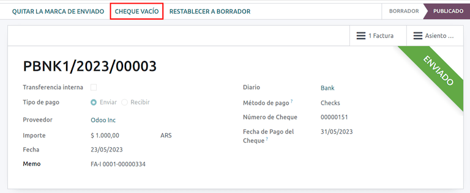
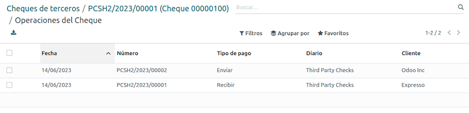

Argentina¶
Webinarios¶
A continuación podrá ver videos con una descripción general de la localización y cómo configurarla.
Ver también
Configuración¶
Instalación de módulos¶
Instale los siguientes módulos para obtener todas las funciones de la localización de Argentina:
Nombre |
Nombre técnico |
Descripción |
|---|---|---|
Argentina - Contabilidad |
|
Es el paquete de localización fiscal predeterminado y representa la configuración mínima para que una empresa opere en Argentina según las regulaciones y lineamientos de la AFIP. |
Reportes de contabilidad para Argentina |
|
Reporte del libro de IVA y reporte resumido de IVA. |
Facturación electrónica para Argentina |
|
Incluye todos los requisitos técnicos y funcionales para generar facturas electrónicas mediante el servicio web, según las regulaciones de la AFIP. |
Comercio electrónico en Argentina |
|
(Opcional) Permite que el usuario visualice el tipo de identificación y la responsabilidad AFIP en el formulario de pago de Comercio electrónico para crear facturas electrónicas. |
Configure su empresa¶
Una vez que los módulos de localización están instalados, el primer paso es configurar los datos de su empresa. Además de la información básica, uno de los campos importantes que debe completar es Tipo de responsabilidad AFIP, que representa la obligación fiscal y la estructura de la empresa.

Plan de cuentas¶
En la aplicación Contabilidad hay tres paquetes distintos de Plan de cuentas que puede elegir y se basan en el tipo de responsabilidad de una empresa ante la AFIP. Además, consideran la diferencia entre las empresas que no necesitan tantas cuentas como las que tienen requisitos fiscales más complejos:
Monotributista (227 cuentas).
IVA Exento (290 cuentas).
Responsable Inscripto (298 cuentas).

Configurar los datos maestros¶
Credenciales de factura electrónica¶
Entorno¶
La infraestructura de la AFIP se replica en dos entornos distintos, el de prueba y el de producción.
En el entorno de prueba las empresas pueden probar sus bases de datos hasta que estén listas para pasar al entorno de producción. Como ambos entornos están completamente aislados entre sí, los certificados digitales de una instancia no son válidas en la otra.
Para seleccionar el entorno de una base de datos, vaya a y elija Prueba o Producción.

Certificados AFIP¶
La facturación electrónica y otros servicios de la AFIP funcionan con los servicios web (WS) que proporciona la AFIP.
Para habilitar la comunicación con la AFIP, el primer paso es solicitar un certificado digital en caso de que todavía no tenga uno.
Genere la solicitud de firma de certificado (en Odoo): cuando selecciona esta opción, se genera el archivo con extensión
.csr(solicitud de firma de certificado) que deberá utilizar en el portal de la AFIP para solicitar el certificado.
Genere el certificado (en la AFIP): acceda al portal de la AFIP y siga las instrucciones descritas en este documento para obtener un certificado.
Suba el certificado y la clave privada (en Odoo): una vez que haya generado el certificado deberá subirlo a Odoo. Haga clic en el icono de lápiz ubicado junto al campo Certificado y seleccione el archivo correspondiente.

Truco
En caso de que necesite configurar el certificado para homologación, consulte la documentación oficial de la AFIP: Certificado para homologación. Además, Odoo le permite al usuario que pruebe la función de facturación electrónica de forma local sin un certificado para homologación. El siguiente mensaje aparecerá en el chatter al realizar pruebas de forma local:

Contacto¶
Tipo de identificación e IVA¶
Como parte de la localización de Argentina, los tipos de documento definidos por la AFIP ahora están disponibles en el formulario de contacto. Esta información es imprescindible para la mayoría de las transacciones. Hay seis tipos de identificación disponibles de forma predeterminada, así como 32 tipos inactivos.

Nota
Odoo incluye la lista completa de tipos de identificación definidos por la AFIP, pero solo los más comunes están activos.
Tipo de responsabilidad AFIP¶
En Argentina, el tipo de responsabilidad AFIP define el tipo de documento y las transacciones correspondientes asociadas con clientes y proveedores. Debe definir este campo en el formulario de contacto.

Impuestos¶
Como parte del módulo de localización, los impuestos se crean de forma automática con su configuración y cuenta financiera relacionadas. Por ejemplo, hay 73 impuestos para Responsable Inscripto.

Tipos de impuestos¶
Argentina tiene varios tipos de impuestos, los más comunes son:
IVA: es el IVA normal y puede tener varios porcentajes.
Percepción: pago anticipado de un impuesto que se aplica en las facturas.
Retención: pago anticipado de un impuesto que se aplica en los pagos.
Impuestos especiales¶
Algunos impuestos argentinos no se utilizan con frecuencia por todas las empresas, así que están inactivos en Odoo de forma predeterminada. Antes de crear un nuevo impuesto, verifique si ya está incluido pero se encuentra inactivo.

Tipos de documentos¶
En algunos países de América Latina, como Argentina, algunas transacciones contables como facturas de cliente y de proveedor se clasifican según los tipos de documento definidos por las autoridades fiscales gubernamentales. En Argentina, la autoridad fiscal gubernamental que define dichas transacciones es la AFIP.
El tipo de documento es información esencial que debe aparecer con claridad en reportes impresos, facturas y asientos contables que enumeren movimientos contables.
Cada tipo de documento puede tener una secuencia única por diario asignado. Como parte de la localización, el tipo de documento incluye el país en el que se puede aplicar el documento (estos datos se crean de forma automática cuando instala el módulo de localización).
La información necesaria para los tipos de documento está incluida forma predeterminada, así que el usuario no necesita completar nada en esta vista:

Nota
Hay varios tipos de documento que están inactivos de forma predeterminada, pero puede activarlos si es necesario.
Letras¶
En Argentina, los tipos de documento incluyen una letra que indica el tipo de transacción u operación. Por ejemplo, cuando una factura está relacionada con una:
Transacción B2B, se debe utilizar un tipo de documento A.
Transacción B2C, se debe utilizar un tipo de documento B.
Transacción de exportación, se debe utilizar un tipo de documento E.
Los documentos incluidos en la localización ya cuentan con la letra adecuada asociada con cada tipo de documento, así que no es necesario configurar una.

Uso en facturas¶
El tipo de documento de cada transacción se determinará por:
El asiento contable relacionado con la factura (si el diario utiliza documentos).
Las condiciones que se aplicaron según el tipo de emisor y receptor (por ejemplo, el tipo de régimen fiscal del comprador y el tipo de régimen fiscal del proveedor).
Diarios contables¶
En la localización de Argentina, el diario puede tener un enfoque distinto según su uso y tipo interno. Para configurar sus diarios, vaya a .
Es posible activar la opción Usar documentos en los diarios de ventas y compras, la cual habilita una lista de tipos de documentos que podrá relacionar con facturas de cliente o de proveedor. Consulte la sección 2.3 Tipos de documentos para obtener más detalles sobre las facturas.
Si no habilita la opción Usar documentos en los diarios de ventas o compras, estos no generarán facturas fiscales y su caso de uso se limitará en mayor medida a monitorear los movimientos de cuenta relacionados con procesos de control interno.
Información AFIP (también conocida como Punto de venta AFIP)¶
El Sistema PdV AFIP es un campo que solo es visible en los diarios de venta y define el tipo de PdV AFIP que se utilizará para gestionar las transacciones para las que se creó el diario.
El PdV AFIP define lo siguiente:
Las secuencias de tipos de documentos relacionados con el servicio web.
La estructura y los datos del archivo de factura electrónica.

Servicios web¶
Los servicios web ayudan a generar facturas para distintos propósitos. Estas son algunas de las opciones que puede elegir:
wsfev1: factura electrónica: es el servicio más común y se utiliza para generar facturas para los tipos de documento A, B, C, M sin detalles por artículo.
wsbfev1: bono fiscal electrónico: es para quienes facturan bienes de capital y desean acceder al beneficio de los bonos de impuestos electrónicos que otorga el Ministerio de Economía. Consulte Bono fiscal para obtener más información.
wsfexv1: factura electrónica de exportación: se utiliza para generar facturas para clientes internacionales y transacciones que involucran procesos de exportación. El tipo de documento relacionado es «E».

Estos son algunos campos útiles que debe conocer al trabajar con servicios web:
Número de PdV en AFIP: es el número configurado en la AFIP para identificar las operaciones relacionadas con este PdV en AFIP.
Dirección de PdV en AFIP: es el campo relacionado con la dirección comercial registrada para el PdV y suele ser la misma dirección que la de la empresa. Por ejemplo, si una empresa tiene varias tiendas (ubicaciones fiscales), entonces la AFIP requerirá que la empresa tenga un PdV en la AFIP por ubicación. Esta ubicación se imprimirá en el reporte de la factura.
Libro unificado: cuando el sistema PdV en AFIP es Preimpresa, los tipos de documentos (aplicables al diario) con la misma letra compartirán la misma secuencia. Por ejemplo:
Factura: FA-A 0001-00000002.
Nota de crédito: NC-A 0001-00000003.
Nota de débito: ND-A 0001-00000004.
Secuencias¶
Para la primera factura, Odoo se sincroniza con la AFIP de forma automática y muestra la última secuencia utilizada.
Nota
Al crear los diarios de compra puede definir si se relacionan con tipos de documentos o no. Si selecciona la opción para usar documentos, no es necesario que asocie de forma manual las secuencias de tipo de documentos, pues el proveedor proporciona el número de documento.
Uso y prueba¶
Facturas¶
La siguiente información aplica para la creación de facturas después de crear los contactos y diarios y configurarlos de forma adecuada.
Asignación de tipo de documento¶
Cuando seleccione el contacto, el campo Tipo de documento se completará en automático según el tipo de documento AFIP:
Factura para un cliente IVA Responsable Inscripto, prefijo A es el tipo de documento que muestra todos los impuestos a detalle junto con la información del cliente.

Factura para un cliente final, prefijo B es el tipo de documento que no detalla los impuestos, ya que se incluyen en el importe total.

Factura de exportación, prefijo E es el tipo de documento que se utiliza en la exportación de bienes que muestra el incoterm.

A pesar de que algunas facturas utilizan el mismo diario, es el campo Tipo de documento el que proporciona el prefijo y la secuencia.
El tipo de documento más común se definirá en automático para las distintas combinaciones de tipo de responsabilidad AFIP, pero el usuario puede actualizarlo de forma manual antes de confirmar la factura.
Elementos de facturas electrónicas¶
Al utilizar facturas electrónicas, si toda la información es correcta, entonces la factura se registra de manera estándar a menos que haya un error que deba corregir. Cuando aparezcan los mensajes de error, indicarán tanto el problema que necesita de su atención así como una propuesta para solucionarlo. Si el error persiste, la factura permanecerá en estado de borrador hasta que lo solucione.
Una vez que registra la factura, la información relacionada con su estado y validación ante la AFIP aparecerá en la pestaña AFIP. Esto incluye:
Autorización AFIP: número de CAE.
Fecha de vencimiento: fecha límite para entregar la factura al cliente (por lo general es de 10 días después de generar el CAE).
Resultado: indica si la factura se ha aceptado en AFIP o aceptado con observaciones.
Impuestos en facturas¶
Según el tipo de responsabilidad AFIP, el IVA se puede aplicar de distintas maneras en el reporte en PDF:
A. Impuestos excluidos: en este caso, el importe gravado se debe identificar con claridad en el reporte. Esta condición se aplica cuando el tipo de responsabilidad AFIP del cliente es Responsable inscripto.

B. Impuestos incluidos: significa que el importe gravado se incluye en el precio del producto, el subtotal y los totales. Esta condición se aplica cuando el cliente tiene uno de los siguientes tipos de responsabilidad AFIP:
Sujeto exento de IVA.
Consumidor final.
Responsable monotributo.
IVA liberado.

Casos de uso especiales¶
Facturas de servicios¶
Para las facturas electrónicas que incluyen servicios, la AFIP requiere que se reporte la fecha de inicio y de finalización del servicio. Esta información se puede registrar en la pestaña Otra información.

Si no selecciona las fechas de forma manual antes de validar la factura, los valores se completarán de forma automática con el primer y el último día del mes de la factura.

Facturas de exportación¶
Las facturas relacionadas con transacciones de exportación requieren que un diario utilice el Comprobante exportación - Web Service del sistema PdV de AFIP para que se les asocie el tipo o tipos de documento adecuados.

Cuando el cliente seleccionado en la factura está configurado con el tipo de responsabilidad AFIP Cliente / Proveedor del exterior - Ley N° 19.640, Odoo asigna de forma automática:
El diario relacionado con el servicio web de exportación.
El tipo de documento de exportación.
La posición fiscal: Compras/Ventas al exterior.
El concepto AFIP: Productos / Exportación definitiva de mercaderías.
Los impuestos exentos.

Nota
Los documentos de exportación requieren que habilite y configure los Incoterms, puede hacerlo en .

Bono fiscal¶
El bono fiscal electrónico lo utilizan quienes facturan bienes de capital y desean obtener el beneficio de los bonos fiscales electrónicos que otorga el Ministerio de Economía.
Para estas transacciones, es importante considerar los siguientes requisitos:
Divisa (según la tabla de parámetros) y cotización de factura.
Impuestos.
Zona.
Detalles de cada artículo:
Código acorde a la Nomenclatura Común del MERCOSUR (NCM).
Descripción completa.
Precio unitario neto.
Cantidad.
Unidad de medida.
Bono.
Tasa de IVA.
Factura de crédito electrónica MiPyme (FCE)¶
Para las facturas de pymes hay varios tipos de documento que se clasifican como MiPyME, las cuales se conocen como facturas de crédito electrónica (o FCE). Esta clasificación desarrolla un proceso que mejora las condiciones de financiamiento para pequeñas y medianas empresas y les permite incrementar su productividad mediante el cobro anticipado de créditos y cuentas por cobrar a sus clientes o proveedores.
Para estas transacciones, es importante considerar los siguientes requisitos:
Tipos de documento específicos (201, 202, 206, etc.).
La AFIP debe aceptar al emisor para transacciones MiPyME.
El importe debe ser mayor a 100,000 ARS.
Una cuenta bancaria de tipo CBU debe estar relacionada con el emisor, de lo contrario no podrá validar la factura y generará un mensaje de error como el siguiente:

Para configurar el modo de transmisión, vaya a los ajustes y seleccione SDC o ADC.

Para cambiar el modo de transmisión de una factura en específico, vaya a la pestaña Otra información, modifíquelo y confirme.
Nota
Cambiar el modo de transmisión no cambiará el modo que se seleccionó en los ajustes.

Al crear una nota de crédito o débito relacionada con un documento FCE:
Utilice los botones Nota de crédito y débito para que toda la información de la factura se transfiera a la nueva nota de crédito o débito.
La letra del documento debe ser la misma que la del documento de origen (A o B).
Debe utilizar la misma divisa que en el documento de origen. Al usar una divisa secundaria puede haber una diferencia si la tasa de cambio difiere entre el día de la emisión y la fecha del pago. Puede crear una nota de crédito o débito para aumentar o reducir el importe a pagar en ARS.

Al crear una nota de crédito podrían haber dos casos:
Se rechaza la FCE, por lo que la nota de crédito debe tener el campo FCE, ¿es cancelación? activado.
La nota de crédito se crea para anular el documento de FCE. En este caso, el campo FCE, ¿es cancelación? debe permanecer vacío.
Reporte impreso de factura¶
El reporte en PDF relacionado con las facturas electrónicas validadas por la AFIP incluye un código de barras en la parte inferior que representa el número de CAE. La fecha de vencimiento también aparece, pues es un requisito legal.

Solución de problemas y auditorías¶
Por motivos de auditoría y solución de problemas, es posible obtener información detallada de un número de factura que se envío con anterioridad a la AFIP. Para obtener esta información, active el modo de desarrollador, vaya al menú y haga clic en el botón Consultar factura en la AFIP.


También es posible obtener el último número que se utilizó en la AFIP para un tipo de documento específico y el número de PdV como referencia para cualquier posible problema en la sincronización de la secuencia entre Odoo y la AFIP.

Facturas de proveedor¶
Según el diario de compras seleccionado para la factura de proveedor, el tipo de documento ahora es un campo obligatorio. Este valor se completa de forma automática según el tipo de responsabilidad AFIP del emisor y el cliente, pero puede cambiar el valor si es necesario.

El campo Número de documento se debe registrar de forma manual y el formato se validará en automático. Sin embargo, en caso de que el formato no sea válido, aparecerá un error de usuario que indica el formato correcto.

El número de factura de proveedor tiene la misma estructura que las facturas de cliente, con la diferencia de que el usuario ingresa la secuencia del documento con el siguiente formato: Prefijo del documento - Letra - Número de documento.
Validar el número de factura de proveedor en la AFIP¶
Como la mayoría de las empresas cuentan con controles internos para verificar que la factura de proveedor está relacionada a un documento validado por la AFIP, puede establecer una validación automática en , tome en cuenta los siguientes niveles:
No disponible: no se realiza la verificación (es el valor predeterminado).
Disponible: se realiza la verificación. En caso de que el número no sea válido, solo muestra una advertencia pero permite registrar la factura de proveedor.
Requerido: se realiza la verificación y no permite que el usuario registre la factura de proveedor si el número de documento no es válido.

Validar facturas de proveedor en Odoo¶
Al habilitar el ajuste de validación de proveedor, aparece un nuevo botón en las facturas de proveedor en Odoo llamado Verificar en la AFIP, está ubicado junto al campo Código de autorización AFIP.

El valor Rechazado aparecerá en el tablero en caso de que la factura de proveedor no se pueda validar en la AFIP y los detalles de la validación se agregarán al chatter.

Casos de uso especiales¶
Conceptos sin impuestos¶
Hay algunas transacciones que incluyen artículos que no forman parte del importe base de IVA, como facturas de combustible.
La factura de proveedor se registrará con un artículo para cada producto que forme parte del importe base de IVA y un artículo adicional para registrar el importe del concepto exento.

Impuestos de percepción¶
La factura de proveedor se registrará con un artículo para cada producto que forme parte del importe base de IVA y el impuesto de percepción se puede agregar en cualquiera de las líneas de producto. Como resultado, habrá un grupo de impuestos para el IVA y otro para la percepción. El valor predeterminado de percepción siempre es 0.10.
Para editar la percepción de IVA y establecer el importe correcto, utilice el icono de lápiz que se encuentra a lado del importe de percepción. Después de establecer el importe de percepción de IVA puede validar la factura.

Gestión de cheques¶
Para instalar el módulo de Gestión de cheques electrónicos/diferidos y de terceros vaya a , busque el nombre técnico del módulo l10n_latam_check y haga clic en el botón Activar.

Este módulo activa la configuración necesaria para diarios y pagos para:
Crear, gestionar y controlar los distintos tipos de cheques.
Optimizar la gestión de sus propios cheques y cheques de terceros.
Contar con una forma fácil y efectiva de gestionar las fechas límite de sus cheques o de los cheques de terceros.
Una vez que haya terminado de realizar la configuración para el flujo de facturas electrónicas para Argentina, también necesita completar las configuraciones para cheques propios o de terceros.
Cheques propios¶
Configure el diario bancario que se usa para crear sus cheques propios en , seleccione el diario bancario y abra la pestaña Pagos salientes.
Uno de los Métodos de pago disponibles deberían ser los Cheques. Si no es así, haga clic en Agregar una línea y escriba
Chequesen la columna Método de pago para agregarlo.Active la opción Usar cheques electrónicos y diferidos.
Nota
Esto deshabilitará la opción de imprimir, pero le permitirá:
ingresar los números de cheque de forma manual, y
agregar un campo para colocar la fecha de pago del cheque.

Gestión de cheques propios¶
Puede crear los cheques propios desde la factura de proveedor. Primero, haga clic en el botón Registrar pago.
En la ventana emergente de registro de pago seleccione el diario bancario al que realizará el pago e indique la Fecha de entrada de efectivo y el Importe.

Nota
Para gestionar cheques actuales debe dejar el campo guilabel:Fecha de entrada de efectivo vacío o completarlo con la fecha actual. Para gestionar cheques diferidos, el campo Fecha de entrada de efectivo debe tener una fecha en el futuro.
Pata gestionar sus propios cheques, vaya a . Esta ventana muestra información importante, como las fechas en las que los cheques se deben pagar, la cantidad total de cheques y el importe que se pagó en cheques.

Es importante tener en cuenta que en la lista solo aparecerán los cheques que aún no están conciliados con un estado de cuenta bancaria, es decir, aquellos que aún no han sido debitados del banco. Puede verificar con el campo Corresponde con un estado de cuenta bancario. Si desea ver todos sus cheques propios, haga clic en el símbolo X para eliminar el filtro Sin conciliación bancaria.

Cancelar un cheque propio¶
Para cancelar un cheque propio creado en Odoo, vaya a y seleccione el cheque que quiere cancelar, después haga clic en el botón Anular cheque. Esto eliminará la conciliación entre la factura del proveedor y los estados de cuenta y cambiará el estado del cheque a cancelado.
Cheques de terceros¶
Necesita configurar dos diarios específicos para poder registrar sus pagos con cheques de terceros. Para hacerlo, vaya a y cree dos diarios nuevos:
Cheques de tercerosCheques rechazados de terceros
Nota
Puede crear más diarios de forma manual si tiene varios puntos de venta y los necesita.
Para crear un diario de cheques de terceros haga clic en Nuevo y configure lo siguiente:
En el Nombre del diario escriba
Cheques de terceros.En Tipo seleccione Efectivo.
En la pestaña Asientos contables vaya al campo Cuenta de efectivo y seleccione
1.1.1.02.010 Cheques de Terceros. Escriba el Código corto que quiera y seleccione una Divisa.

Los métodos de pago disponibles se encuentran en las pestañas de pago:
Para los cheques de terceros entrantes nuevos, vaya a la pestaña y seleccione Nuevos cheques de terceros. Este método se utiliza para crear nuevos cheques de terceros.
Para los cheques de terceros existentes entrantes y salientes, vaya a la pestaña y seleccione Cheques existentes de terceros. Repita el mismo paso para la pestaña Pagos salientes. Este método se utiliza para recibir y pagar facturas de proveedores con cheques ya existentes, así como para transferencias internas.
Truco
Puede eliminar los métodos de pago preexistentes que aparecen de manera predeterminada al configurar los diarios de cheques de terceros.

También es necesario crear y configurar el diario Cheques rechazados de terceros. Este diario se utiliza para gestionar los cheques rechazados de terceros y puede utilizarse para enviar cheques rechazados en el momento del cobro o cuando provienen de proveedores al ser rechazados.
Para crear el diario Cheques rechazados de terceros, haga clic en el botón Nuevo y configure lo siguiente:
En el Nombre del diario escriba
Cheques rechazados de terceros.En Tipo seleccione Efectivo.
En la pestaña Asientos contables vaya al campo Cuenta de efectivo y seleccione
1.1.1.01.002 Cheques rechazados de terceros. Escriba el Código corto que quiera y seleccione una Divisa.
Utilice los mismos métodos de pago que en el diario Cheques de terceros.
Nuevos cheques de terceros¶
Para registrar un nuevo cheque de terceros para una factura de cliente, haga clic en el botón Registrar pago. En la ventana emergente debe seleccionar Cheques de terceros como diario para registrar el pago.
Seleccione Nuevos cheques de terceros como método de pago y complete los campos Número de cheque, Fecha de pago y Banco emisor del cheque. También puede agregar de forma manual el IVA del emisor del cheque, pero se completa en automático con el número de IVA del cliente relacionado con la factura.

Cheques existentes de terceros¶
Para pagar una factura de proveedor con un cheque existente, haga clic en el botón Registrar pago. En la ventana emergente debe seleccionar Cheques de terceros como diario para registrar el pago.
Seleccione Cheques existentes de terceros como método de pago y seleccione un cheque del campo Cheque. El campo muestra todos los cheques existentes disponibles para ser utilizados como pago de facturas de proveedores.

Cuando utiliza un cheque existente de terceros puede revisar las operaciones relacionadas con él. Por ejemplo, puede ver si un cheque de terceros creado para pagar una factura de cliente se utilizó después como cheque existente de terceros para pagar una factura de proveedor.
Para ello, vaya a o a según sea el caso y seleccione un cheque. En el campo Diario de cheques, haga clic en => Operaciones de cheques para ver el historial y los movimientos del cheque.
El menú también muestra información importante relacionada con estas operaciones, como:
El tipo de pago que permite clasificar si se trata de un pago enviado a un proveedor o de un pago recibido de un cliente.
El diario en el que está registrado actualmente el cheque.
El contacto asociado a la operación (ya sea cliente o proveedor).
Reportes¶
Como parte de la instalación de la localización agregamos reportes financieros para Argentina al tablero de Contabilidad. Puede acceder a estos reportes desde .

Reportes de IVA¶
Libro IVA de ventas¶
En este reporte se registran todas las ventas y se toman como base de los registros contables para determinar el IVA (débito fiscal).
El reporte del libro IVA de ventas se puede exportar en un archivo .zip con el botón LIBRO IVA (ZIP) ubicado en la parte superior izquierda. Este archivo zip incluye archivos .txt que debe subir al portal de la AFIP.
Libro IVA de compras¶
El reporte del libro IVA de compras se puede exportar en un archivo .zip con el botón LIBRO IVA (ZIP) ubicado en la parte superior izquierda. Este archivo zip incluye archivos .txt que debe subir al portal de la AFIP.

Resumen de IVA¶
Es una tabla dinámica diseñada para comprobar los totales mensuales de IVA. Este reporte es de uso interno y no se envía a la AFIP.

IIBB - Reportes¶
IIBB - Ventas por jurisdicción¶
Es una tabla dinámica en la que puede validar los ingresos brutos de cada jurisdicción. Es una declaración jurada de los impuestos por pagar correspondientes, por lo que no se envía a la AFIP.

IIBB - Compras por jurisdicción¶
Es una tabla dinámica en la que puede validar las compras brutas de cada jurisdicción. Es una declaración jurada de los impuestos por pagar correspondientes, por lo que no se envía a la AFIP.